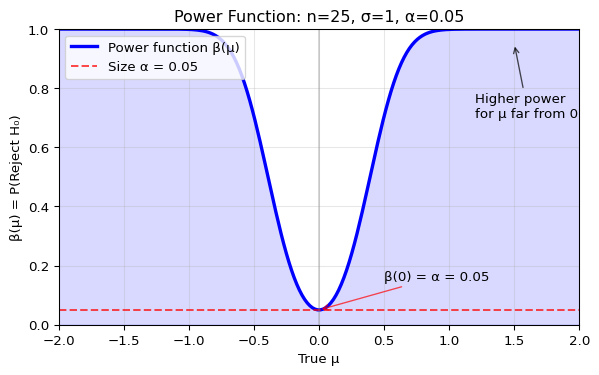
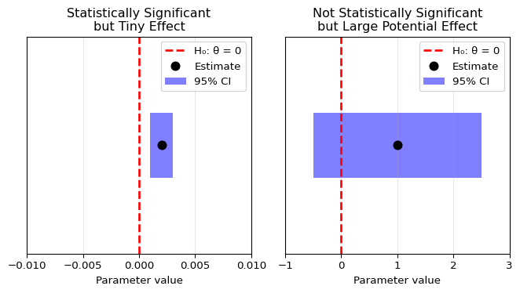
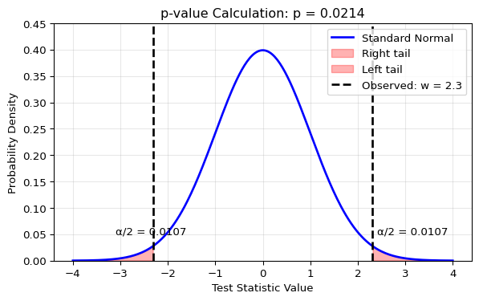
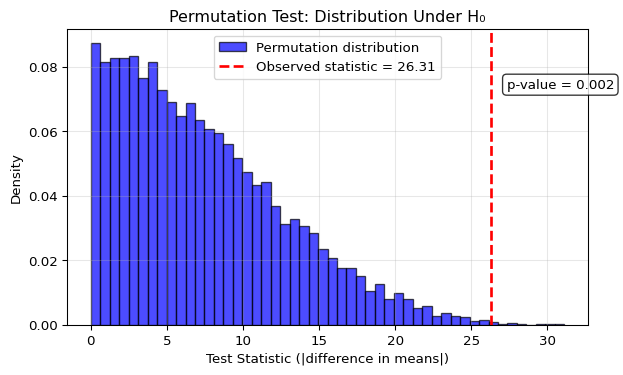
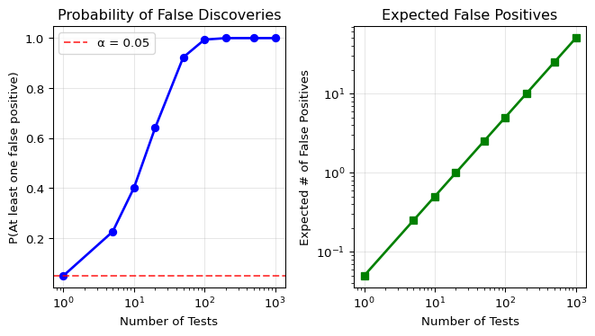
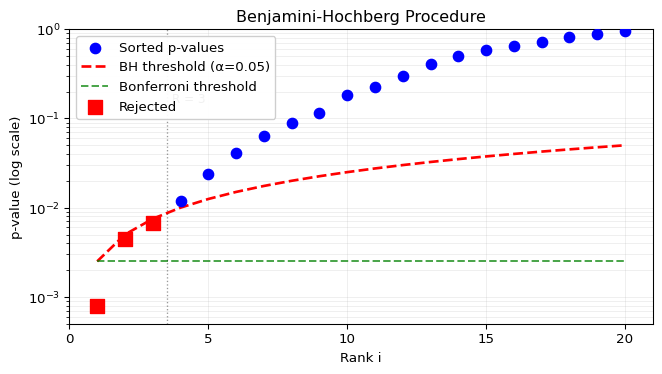

7 Hypothesis Testing and p-values
7.1 Learning Objectives
After completing this chapter, you will be able to:
- Explain the core framework of null-hypothesis significance testing (NHST), including the roles of null/alternative hypotheses, Type I/II errors, and statistical power.
- Define the p-value and correctly interpret its meaning, recognizing its limitations and common misinterpretations.
- Apply and interpret common hypothesis tests, such as the Wald test and permutation test, and understand the connection between tests and confidence intervals.
- Explain the multiple testing problem and apply standard correction methods like the Bonferroni and Benjamini-Hochberg procedures.
- Critically evaluate the use of NHST and p-values in data analysis and scientific research.
Note
This chapter covers null-hypothesis significance testing (NHST) and p-values, fundamental concepts in statistical inference. The material is adapted from Chapter 10 of Wasserman (2013), supplemented with computational examples and critical perspectives on the use of NHST in modern data science.
7.2 Introduction: Is an Observed Effect Real or Just Random Chance?
A drug company is running a clinical trial of a new drug. Patients are randomly assigned to either a treatment group that receives the new drug (100 subjects), or a control group that receives a placebo (other 100 subjects). After a suitable period of observation, the results are tallied:
| Better | Not Better | |
|---|---|---|
| Treated | 50 | 50 |
| Control | 40 | 60 |
Looking at these numbers, we see that 50% of the treated patients improved, compared to only 40% of the control patients. But is this 10 percentage point difference large enough to represent a real effect of the drug, or could it simply be due to random chance in how we happened to assign individuals to groups?
Similarly, an online retailer might run an A/B test comparing two different user interfaces. Users are randomly shown either the old system or a new design, and we track their purchase behavior:
| Purchase | No Purchase | |
|---|---|---|
| New System | 850 | 150 |
| Old System | 800 | 200 |
The new system appears to have a higher conversion rate (85% vs 80%), but again we face the fundamental question: is this difference statistically meaningful, or just random variation?
These questions lie at the heart of Null-Hypothesis Significance Testing (NHST), one of the most widely used – and most debated1 – frameworks in statistics. The core idea is to start by assuming there is no effect (the “null hypothesis”) and then ask how surprising our observed data would be under that assumption. If the data would be very surprising under the null, we have evidence against it.
This chapter builds the NHST framework from the ground up, introducing key concepts like p-values, statistical power, and the critical issue of multiple testing. We’ll see how these tools help us distinguish real effects from random noise, while also understanding their limitations and why they’re often misused in practice.
Finnish Terminology Reference
For Finnish-speaking students, here’s a reference table of key terms in this chapter:
| English | Finnish | Context |
|---|---|---|
| Null Hypothesis | Nollahypoteesi | The default assumption of no effect |
| Alternative Hypothesis | Vastahypoteesi, vaihtoehtoinen hypoteesi | What we hope to find evidence for |
| Simple Hypothesis | Yksinkertainen hypoteesi, pistehypoteesi | Hypothesis that completely specifies the distribution |
| Composite Hypothesis | Yhdistetty hypoteesi | Hypothesis that specifies a range of values |
| Two-sided Test | Kaksisuuntainen testi | Test detecting differences in either direction |
| One-sided Test | Yksitahoinen testi, yksisuuntainen testi | Test detecting differences in one direction |
| Rejection Region | Hylkäysalue | Set of outcomes leading to rejection |
| Test Statistic | Testisuure | Summary of evidence against null |
| Critical Value | Kriittinen arvo | Threshold for rejection |
| Type I Error | Hylkäysvirhe | False positive rejection |
| Type II Error | Hyväksymisvirhe | False negative (failure to detect) |
| Power | Voima | Probability of detecting true effect |
| Power function | Voimafunktio | Power as function of parameter |
| Size of a test | Testin koko | Maximum Type I error rate |
| Statistically significant | Tilastollisesti merkitsevä | Result unlikely under null |
| Wald Test | Waldin testi | Test based on asymptotic normality |
| Paired test | Parittainen testi | Test for dependent samples |
| Permutation test | Permutaatiotesti, satunnaistamistesti | Non-parametric test |
| Likelihood ratio statistic | Uskottavuusosamääräsuure | Ratio of likelihoods |
| Multiple testing | Monitestaus | Running many tests simultaneously |
| False discovery rate (FDR) | Väärien löydösten osuus | Expected proportion of false positives |
7.3 The Framework of Hypothesis Testing
7.3.1 Null and Alternative Hypotheses
When we observe a difference between two groups or a pattern in data, we need a systematic way to determine whether this observation represents a genuine phenomenon or could simply be due to chance. Hypothesis testing provides this framework by setting up two competing explanations and evaluating the evidence against one of them.
Null Hypothesis (H_0): A statement of “no effect” or “no difference.” It’s the default assumption we seek to find evidence against.
Alternative Hypothesis (H_1): The statement we hope to find evidence for, typically representing the presence of an effect or difference.
For example, in our drug trial:
- H_0: The drug has the same efficacy as the placebo (no effect)
- H_1: The drug’s efficacy differs from the placebo
In the parametric framework we studied in Chapters 5-6, we can often formalize this by partitioning the parameter space \Theta into two disjoint sets \Theta_0 and \Theta_1, and testing:
H_0: \theta \in \Theta_0 \quad \text{versus} \quad H_1: \theta \in \Theta_1
The nature of the hypotheses determines the type of test:
Simple hypothesis: A hypothesis that completely specifies the distribution, such as \theta = \theta_0.
Composite hypothesis: A hypothesis that specifies a range of values, such as \theta > \theta_0 or \theta < \theta_0.
Two-sided test: Tests H_0: \theta = \theta_0 versus H_1: \theta \neq \theta_0 (detects differences in either direction).
One-sided test: Tests H_0: \theta \leq \theta_0 versus H_1: \theta > \theta_0 (or the reverse), detecting differences in a specific direction.
Most scientific applications use two-sided tests, as we’re typically interested in detecting any difference from the null, not just differences in a predetermined direction.
7.3.2 The Machinery of a Test
Once we’ve specified our hypotheses, we need a systematic procedure for deciding between them based on the observed data. This involves defining what outcomes would lead us to reject the null hypothesis.
Let X be a random variable with range \mathcal{X}.
Rejection Region (R \subset \mathcal{X}): The subset of outcomes for which we will reject H_0. If X \in R, we reject the null hypothesis; otherwise, we retain it.2
Test Statistic (T(X^n)): A function of the data that summarizes the evidence against H_0. Common examples include differences in sample means, ratios of variances, or correlation coefficients.
Critical Value (c): A threshold used to define the rejection region, often in terms of a test statistic, such as
R = \{x: T(x) > c\} \quad \text{ or } \quad R = \{x: |T(x)| > c\}
7.3.3 Two Ways to Be Wrong: Type I and Type II Errors
When we make a decision based on data, we can make two types of errors. Understanding these errors is crucial for properly designing and interpreting hypothesis tests.
Type I Error: Rejecting H_0 when H_0 is true (false positive). The probability of Type I error is denoted \alpha.
Type II Error: Failing to reject H_0 when H_1 is true (false negative). The probability of Type II error is denoted \beta.
The possible outcomes of a hypothesis test can be summarized as:
| H_0 True | H_0 False | |
|---|---|---|
| H_0 Retained | ✓ Correct (True Negative) | ✗ Type II Error (False Negative) |
| H_0 Rejected | ✗ Type I Error (False Positive) | ✓ Correct (True Positive) |
Key quantities for characterizing test performance:
Power Function: For a test with rejection region R, the power function is: \beta(\theta) = \mathbb{P}_\theta(X \in R)
Size of a Test: The maximum probability of Type I error: \alpha = \sup_{\theta \in \Theta_0} \beta(\theta)
Level of a Test: A test has level \alpha if its size is at most \alpha.
Power of a Test: The probability of correctly rejecting H_0 when it’s false: \text{Power} = 1 - \beta = \mathbb{P}_\theta(\text{Reject } H_0 \mid \theta \in \Theta_1)
There’s an inherent trade-off between Type I and Type II errors: making it harder to commit a Type I error (lowering \alpha) makes it easier to commit a Type II error (increasing \beta), thus reducing power. Standard practice is to fix the Type I error rate at a conventional level (typically \alpha = 0.05) and design the study to have adequate power (typically 80% or higher).
The relationship between these errors explains why we use asymmetric language: we “reject” or “fail to reject” H_0, never “accept” it. Failing to reject doesn’t prove H_0 is true – we might simply lack power to detect the effect!
Think of hypothesis testing like a criminal trial. The null hypothesis is “the defendant is innocent” – our default assumption until proven otherwise. We only reject this assumption (convict) if the evidence against innocence is very strong.
Just as a trial can go wrong in two ways, so can a hypothesis test:
- Type I Error: Convicting an innocent person (false positive)
- Type II Error: Acquitting a guilty person (false negative)
A common illustration uses the Voight-Kampff test, which detects replicants (human-looking androids):
With \(H_0\): “The subject is human”:
- Type I Error: Test says
REPLICANTbut subject is actually human (wrongly flagged as android). - Type II Error: Test says
HUMANbut subject is actually an android (missed detection).
Let’s derive the power function for a concrete example. Consider testing the mean of a normal distribution:
Setup: We have \(X_1, \ldots, X_n \sim \mathcal{N}(\mu, \sigma^2)\) with known variance \(\sigma^2\), testing: \[H_0: \mu = 0 \quad \text{versus} \quad H_1: \mu \neq 0\]
Test statistic: The sample mean \(\bar{X} \sim \mathcal{N}(\mu, \sigma^2/n)\). Under \(H_0\) where \(\mu = 0\): \[Z = \frac{\sqrt{n}\bar{X}}{\sigma} \sim \mathcal{N}(0, 1)\]
Decision rule: For a level \(\alpha\) test, we reject \(H_0\) when \(|Z| > z_{\alpha/2}\), where \(z_{\alpha/2}\) is the \((1-\alpha/2)\) quantile of the standard normal distribution.
Power function: For any true value \(\mu\), the power is: \[\beta(\mu) = \mathbb{P}_\mu(\text{Reject } H_0) = \mathbb{P}_\mu(|Z| > z_{\alpha/2})\]
Under the true \(\mu\), the test statistic follows \(Z \sim \mathcal{N}(\sqrt{n}\mu/\sigma, 1)\). Therefore: \[\beta(\mu) = \mathbb{P}\left(\left|\mathcal{N}\left(\frac{\sqrt{n}\mu}{\sigma}, 1\right)\right| > z_{\alpha/2}\right)\]
This probability depends on three key factors:
- Effect size:
\(\delta = \mu/\sigma\) (standardized
distance from null)
- Sample size: Larger \(n\) → higher power
- Significance level: Larger \(\alpha\) → higher power (but more Type I errors)
Let’s visualize this power function for \(H_0: \mu = 0\), \(\sigma = 1\), \(n = 25\), \(\alpha = 0.05\):
The mirrored S-shaped curve demonstrates that power is minimized at the boundary of \(H_0\) (here, \(\mu = 0\)) and increases monotonically as the true parameter moves away from the null value, making detecting the difference easier.
Let’s simulate hypothesis testing to see Type I and Type II errors in action. We’ll test \(H_0: \mu = 0\) using one-sample t-tests on data from normal distributions. By generating many datasets under different true means, we can observe the empirical error rates:
import numpy as np
from scipy import stats
# Simulate multiple hypothesis tests
np.random.seed(42)
n_tests = 10000
n_samples = 30
alpha = 0.05
# Scenario 1: H0 is true (μ = 0)
# We should reject H0 about 5% of the time (Type I error rate)
type_i_errors = 0
for _ in range(n_tests):
sample = np.random.normal(0, 1, n_samples) # H0 true: μ = 0
t_stat, p_value = stats.ttest_1samp(sample, 0)
if p_value < alpha:
type_i_errors += 1
print(f"Type I Error Rate (H₀ true, μ=0):")
print(f" Theoretical: {alpha:.3f}")
print(f" Observed: {type_i_errors/n_tests:.3f}")
# Scenario 2: H0 is false (μ = 0.5)
# Power = probability of correctly rejecting H0
true_mu = 0.5
rejections = 0
for _ in range(n_tests):
sample = np.random.normal(true_mu, 1, n_samples) # H0 false: μ = 0.5
t_stat, p_value = stats.ttest_1samp(sample, 0)
if p_value < alpha:
rejections += 1
power = rejections / n_tests
type_ii_error_rate = 1 - power
print(f"\nWhen H₀ is false (true μ={true_mu}):")
print(f" Power (correct rejection): {power:.3f}")
print(f" Type II Error Rate (miss): {type_ii_error_rate:.3f}")Type I Error Rate (H₀ true, μ=0):
Theoretical: 0.050
Observed: 0.056
When H₀ is false (true μ=0.5):
Power (correct rejection): 0.750
Type II Error Rate (miss): 0.250Factors affecting power:
- Effect size: Larger true differences from \(H_0\) → higher power
- Sample size: More data → higher power
- Variability: Lower variance → higher power
- Significance level: Higher \(\alpha\) → higher power (but more Type I errors)
7.3.4 The Wald Test
The Wald test is one of the most widely used hypothesis tests in statistics. It leverages the asymptotic normality of estimators that we studied in Chapters 5-6, providing a general framework for testing hypotheses about parameters.
The key insight: If our estimator \hat{\theta} is approximately normal (which many estimators are for large samples), we can use this normality to construct a test statistic with a known distribution under the null hypothesis.
The Wald Test: For testing H_0: \theta = \theta_0 versus H_1: \theta \neq \theta_0:
Assume that \hat{\theta} is asymptotically normal: \frac{(\hat{\theta} - \theta_0)}{\widehat{\text{se}}} \rightsquigarrow \mathcal{N}(0,1)
The size \alpha Wald test rejects H_0 when |W| > z_{\alpha/2}, where: W = \frac{\hat{\theta} - \theta_0}{\widehat{\text{se}}}
Key Properties of the Wald Test:
Correct error rate: For large samples, the test has (approximately) the desired Type I error rate \alpha
Power increases with:
- Larger effect size (bigger difference from \theta_0)
- Larger sample size (more data)
- Smaller variance (less noise)
Duality with confidence intervals: The Wald test rejects H_0: \theta = \theta_0 if and only if \theta_0 is outside the (1-\alpha) confidence interval
Mathematical Details
Asymptotic size: As n \to \infty, \mathbb{P}_{\theta_0}(|W| > z_{\alpha/2}) \to \alpha
Power function: When the true parameter is \theta_* \neq \theta_0, the power is: \text{Power}(\theta_*) = 1 - \Phi\left(\frac{\theta_0 - \theta_*}{\widehat{\text{se}}} + z_{\alpha/2}\right) + \Phi\left(\frac{\theta_0 - \theta_*}{\widehat{\text{se}}} - z_{\alpha/2}\right) where \Phi is the standard normal CDF.
Confidence interval duality: Reject H_0 if and only if \theta_0 \notin [\hat{\theta} - z_{\alpha/2} \cdot \widehat{\text{se}}, \hat{\theta} + z_{\alpha/2} \cdot \widehat{\text{se}}]
This last property provides a powerful duality: every confidence interval can be inverted to give a hypothesis test, and vice versa. This is why confidence intervals are often more informative than p-values alone – they show all parameter values that wouldn’t be rejected.
7.3.5 Statistical and Scientific Significance
When H_0 is rejected, the result is called statistically significant. This does not mean that the result has any practical or scientific relevance! The effect found could be very tiny and negligible for all practical purpose.
Statistical vs. Scientific Significance
Statistical significance ≠ Scientific significance
Let’s assume \alpha = 0.05 and \theta_0 = 0. In this case, we reject the null if the 95 % confidence interval (CI) excludes 0. A result can be:
- Statistically significant but scientifically trivial: The CI excludes 0 but is very close to it (where “very close” depends on the domain).
- Statistically non-significant but scientifically important: The CI includes 0 but also includes large, meaningful effects.
Always report confidence intervals alongside p-values (described in the next section) to show both statistical and practical significance!
Let’s visualize this distinction:
Show code
import matplotlib.pyplot as plt
# Two example confidence intervals
fig, (ax1, ax2) = plt.subplots(1, 2, figsize=(7, 4))
# Example 1: Statistically significant but small effect
theta0 = 0
ci1_lower, ci1_upper = 0.001, 0.003
ci1_center = (ci1_lower + ci1_upper) / 2
ax1.axvline(theta0, color='red', linestyle='--', linewidth=2, label='H₀: θ = 0')
ax1.barh(0, ci1_upper - ci1_lower, left=ci1_lower, height=0.3,
color='blue', alpha=0.5, label='95% CI')
ax1.plot(ci1_center, 0, 'ko', markersize=8, label='Estimate')
ax1.set_xlim(-0.01, 0.01)
ax1.set_ylim(-0.5, 0.5)
ax1.set_xlabel('Parameter value')
ax1.set_title('Statistically Significant\nbut Tiny Effect')
ax1.legend(loc='upper right')
ax1.set_yticks([])
ax1.grid(True, alpha=0.3)
# Example 2: Not significant but large potential effect
ci2_lower, ci2_upper = -0.5, 2.5
ci2_center = (ci2_lower + ci2_upper) / 2
ax2.axvline(theta0, color='red', linestyle='--', linewidth=2, label='H₀: θ = 0')
ax2.barh(0, ci2_upper - ci2_lower, left=ci2_lower, height=0.3,
color='blue', alpha=0.5, label='95% CI')
ax2.plot(ci2_center, 0, 'ko', markersize=8, label='Estimate')
ax2.set_xlim(-1, 3)
ax2.set_ylim(-0.5, 0.5)
ax2.set_xlabel('Parameter value')
ax2.set_title('Not Statistically Significant\nbut Large Potential Effect')
ax2.legend(loc='upper right')
ax2.set_yticks([])
ax2.grid(True, alpha=0.3)
plt.tight_layout()
plt.show()
The visualization demonstrates the CI-test duality: using significance level \alpha = 0.05, we construct a 95% CI (since 1 - \alpha = 0.95). We reject H_0: \theta = 0 if and only if 0 lies outside this interval.
Left panel: The 95% CI excludes 0, so we reject H_0 at the 5% level. But the effect is tiny (0.001 to 0.003) – statistically significant but practically negligible.
Right panel: The 95% CI includes 0, so we fail to reject H_0. However, the interval also includes large values (up to 2.5) – we simply lack precision to determine if there’s an effect.
7.4 The p-value: A Continuous Measure of Evidence
7.4.1 Understanding the p-value
Simply reporting “reject H_0” or “retain H_0” isn’t very informative – the result depends entirely on the chosen significance level \alpha. What if we could provide a continuous measure of the strength of evidence against the null hypothesis? This is exactly what the p-value provides.
The p-value is the probability, calculated under H_0, of observing a test statistic value at least as extreme as the one actually observed:
\text{p-value} = \mathbb{P}_{H_0}(T \text{ as extreme or more extreme than } T_\text{obs})
Equivalently, it’s the smallest significance level \alpha at which we would reject H_0: \text{p-value} = \inf\{\alpha : T(X^n) \in R_\alpha\}
where R_\alpha is the rejection region for a size \alpha test.
Why are these two definitions equivalent?
The rejection region R_\alpha contains the most extreme \alpha proportion of possible test statistics. If our observed statistic is “more extreme than 2.1% of possible values” (p = 0.021), then:
- We’d reject for any \alpha \geq 0.021 (our observation is extreme enough)
- We’d fail to reject for any \alpha < 0.021 (our observation isn’t extreme enough)
- Thus 0.021 is exactly the boundary – the smallest \alpha for which we’d reject
The p-value acts as a threshold: it tells us both how extreme our observation is AND the critical significance level where our decision switches.
Key properties of p-values:
- Range: p-values lie between 0 and 1
- Interpretation: Small p-value = strong evidence against H_0
- Decision rule: Reject H_0 if p-value < \alpha
- Under H_0: The p-value follows a \text{Uniform}(0,1) distribution
The p-value is often called a “surprise index.” It answers the question: “If there were truly no effect (if \(H_0\) were true), how likely would we be to see a result at least as extreme as the one we actually observed?”
Think of it this way: Imagine you suspect a coin is biased. You flip it 10 times and get 9 heads. The p-value asks: “If this were actually a fair coin, what’s the probability of getting 9 or more heads in 10 flips?” If that probability is very small, you have strong evidence the coin isn’t fair.
A small p-value means our data would be very surprising under the null hypothesis, providing evidence against it. A large p-value means our data is consistent with the null hypothesis (though this doesn’t prove the null is true! Maybe we simply didn’t collect enough data).
Let \(T(X^n)\) be the test statistic and \(t_\text{obs} = T(x^n)\) be its observed value from the data. The p-value formalizes the “surprise index” under the null hypothesis \(H_0\).
1. Simple Null Hypothesis (\(H_0: \theta = \theta_0\))
For a simple null, the p-value is the probability of observing a test statistic at least as extreme as \(t_\text{obs}\). The definition of “extreme” depends on the alternative hypothesis \(H_1\):
- Right-tailed test (\(H_1: \theta > \theta_0\)): Extreme means large values of \(T\). \[ \text{p-value} = \mathbb{P}_{\theta_0}(T(X^n) \geq t_\text{obs}) \]
- Left-tailed test (\(H_1: \theta < \theta_0\)): Extreme means small values of \(T\). \[ \text{p-value} = \mathbb{P}_{\theta_0}(T(X^n) \leq t_\text{obs}) \]
- Two-tailed test (\(H_1: \theta \neq \theta_0\)): Extreme means large values of \(|T|\) (or similar symmetric measure). \[ \text{p-value} = \mathbb{P}_{\theta_0}(|T(X^n)| \geq |t_\text{obs}|) \]
2. Composite Null Hypothesis (\(H_0: \theta \in \Theta_0\))
When the null hypothesis is composite (e.g., \(H_0: \mu \le 0\)), there isn’t a single distribution under \(H_0\). We need to find the probability of an extreme result under the “worst-case” scenario within \(\Theta_0\) – the one that makes our data look least surprising. This is achieved by taking the supremum (least upper bound) of the probability over all possible parameter values in \(\Theta_0\).
For a right-tailed test, the formula is: \[ \text{p-value} = \sup_{\theta \in \Theta_0} \mathbb{P}_\theta(T(X^n) \geq t_\text{obs}) \]
This ensures that if we reject when p-value \(< \alpha\), the Type I error rate is controlled and does not exceed \(\alpha\) for any \(\theta \in \Theta_0\). For many standard tests, this supremum occurs at the boundary of \(\Theta_0\) (e.g., at \(\mu=0\) for \(H_0: \mu \le 0\)).
Let’s visualize how the p-value is calculated for a two-sided test. We’ll use the Wald test as our example, where the test statistic follows a standard normal distribution under \(H_0\).
For a two-sided test (e.g., \(H_0: \theta = \theta_0\) vs \(H_1: \theta \neq \theta_0\)), “extreme” means far from zero in either direction. The p-value is the total probability in both tails beyond our observed test statistic:
import numpy as np
import matplotlib.pyplot as plt
from scipy import stats
# Example: Observed test statistic value
w_obs = 2.3 # Our observed Wald statistic
# Create the standard normal distribution
z_values = np.linspace(-4, 4, 300)
pdf_values = stats.norm.pdf(z_values)
# Calculate p-value
p_value = 2 * stats.norm.cdf(-abs(w_obs))
plt.figure(figsize=(7, 4))
# Plot the distribution
plt.plot(z_values, pdf_values, 'b-', linewidth=2, label='Standard Normal')
# Shade the rejection regions (tails)
tail_right = z_values[z_values >= abs(w_obs)]
tail_left = z_values[z_values <= -abs(w_obs)]
plt.fill_between(tail_right, 0, stats.norm.pdf(tail_right),
color='red', alpha=0.3, label=f'Right tail')
plt.fill_between(tail_left, 0, stats.norm.pdf(tail_left),
color='red', alpha=0.3, label=f'Left tail')
# Mark the observed values
plt.axvline(w_obs, color='black', linestyle='--', linewidth=2, label=f'Observed: w = {w_obs}')
plt.axvline(-w_obs, color='black', linestyle='--', linewidth=2)
# Add annotations
plt.text(w_obs + 0.1, 0.05, f'α/2 = {p_value/2:.4f}', fontsize=10)
plt.text(-w_obs - 0.8, 0.05, f'α/2 = {p_value/2:.4f}', fontsize=10)
plt.xlabel('Test Statistic Value')
plt.ylabel('Probability Density')
plt.title(f'p-value Calculation: p = {p_value:.4f}')
plt.legend(loc='upper right')
plt.grid(True, alpha=0.3)
plt.ylim(0, 0.45)
plt.show()
print(f"For observed test statistic w = {w_obs}:")
print(f"p-value = 2 * P(Z > |{w_obs}|) = {p_value:.4f}")
print(f"\nInterpretation: If H₀ were true, we'd see a test statistic")
print(f"this extreme or more extreme only {p_value*100:.2f}% of the time.")
For observed test statistic w = 2.3:
p-value = 2 * P(Z > |2.3|) = 0.0214
Interpretation: If H₀ were true, we'd see a test statistic
this extreme or more extreme only 2.14% of the time.7.4.2 How to Interpret p-values (and How Not To)
The p-value is one of the most misunderstood concepts in statistics. Let’s clarify what it is and isn’t.
What the p-value IS:
- The p-value IS the probability, computed under H_0, of observing data as extreme or more extreme than what we actually observed
- The p-value IS a measure of evidence against H_0 – smaller values indicate stronger evidence
- The p-value IS the answer to: “If H_0 were true, how surprising would our data be?”
- The p-value IS useful for deciding whether to reject H_0 at any given significance level
A p-value of 0.02 means: If the null hypothesis were true, we’d see data this extreme or more extreme only 2% of the time. That’s fairly surprising, suggesting the null might be false.
Common p-value Misinterpretations
A p-value is NOT the probability that the null hypothesis is true.
- Wrong: “p = 0.03 means there’s a 3% chance the null hypothesis is true”
- The p-value is \mathbb{P}(\text{data} | H_0), not \mathbb{P}(H_0 | \text{data})
- Computing \mathbb{P}(H_0 | \text{data}) requires Bayesian methods (Chapter 8)
A large p-value is NOT strong evidence that the null hypothesis is true.
- A large p-value could mean:
- H_0 is true, or
- H_0 is false but our test has low power to detect the effect
- Never conclude “we accept H_0” based on a large p-value
Statistical significance is NOT the same as practical significance.
- With enough data, tiny meaningless effects can become “statistically significant”
- Always examine the effect size (e.g., via confidence intervals) to judge practical importance
- Example: A drug that lowers blood pressure by 0.1 mmHg might be statistically significant with n=10,000 but clinically meaningless
Standard p-value Interpretation Scales
The interpretation of p-values varies significantly by field and context. Here’s a common scale used in many fields:
| p-value | Evidence against H_0 |
|---|---|
| < 0.01 | Strong evidence |
| 0.01 - 0.05 | Positive evidence |
| > 0.05 | Little or no evidence |
Field-specific standards:
- Medicine/Psychology: Often use \alpha = 0.05 as the standard.
- Genomics: Use much stricter thresholds (e.g., 5 × 10^{-8}) due to multiple testing, as we will see below.
- Particle Physics: Extremely strict standards for discoveries:
- The Higgs boson discovery required a “5-sigma” result (p < 3 × 10^{-7}).
- This corresponds to less than 1 in 3.5 million chance of a false positive.
These thresholds are conventions, not laws of nature. The appropriate threshold depends on the consequences of Type I and Type II errors in your specific context.
If the test statistic has a continuous distribution, then under H_0: \theta = \theta_0, the p-value has a Uniform(0,1) distribution. Therefore, if we reject H_0 when the p-value is less than \alpha, the probability of a Type I error is exactly \alpha.
This property means that p-values “work correctly” – under the null hypothesis, you’ll get a p-value less than 0.05 exactly 5% of the time, a p-value less than 0.01 exactly 1% of the time, and so on.
7.4.3 Applying p-values: Classification Algorithm Comparison
Let’s apply the Wald test and p-value concepts to a practical problem that appears frequently in machine learning and data science: comparing the performance of two classification algorithms. This example (from AoS Example 10.7) illustrates both independent and paired testing scenarios.
Paired vs Independent Tests
Paired tests are generally more powerful than independent tests when:
- The same subjects/instances are measured twice
- There’s positive correlation between measurements
The paired test removes the between-subject variability, focusing only on within-subject differences.
7.5 Constructing Statistical Tests
Now that we understand p-values and have seen the Wald test in action, let’s step back and consider the general problem: How do we construct a statistical test?
Given a test statistic T(X^n) and null hypothesis H_0, we need to determine the distribution of T under H_0 to calculate p-values and make decisions. There are three main approaches:
- Exact Distribution: Sometimes we can calculate the exact distribution of T under H_0
- Example: Fisher’s exact test for 2×2 tables
- Advantage: Exact p-values, valid for any sample size
- Disadvantage: Only possible for simple cases
- Asymptotic Approximation: Use limiting distributions as n \to \infty
- Examples: Wald test (normal), likelihood ratio test (chi-squared)
- Advantage: Widely applicable, computationally simple
- Disadvantage: May be inaccurate for small samples
- Simulation/Resampling: Simulate the distribution by resampling
- Examples: Permutation test, bootstrap test
- Advantage: Minimal assumptions, works for any test statistic
- Disadvantage: Computationally intensive
The choice depends on:
- Sample size (small samples → avoid asymptotics)
- Distributional assumptions (violated → use resampling)
- Test statistic complexity (complex → simulation may be only option)
- Computational resources (limited → prefer analytical methods)
Let’s now explore specific tests that exemplify each approach: the permutation test (simulation), Fisher’s exact test (exact distribution), and the likelihood ratio test (asymptotic).
7.5.1 The Permutation Test: A Simulation Approach
The permutation test is a powerful non-parametric method for testing whether two distributions are the same. It exemplifies the simulation approach to test construction, making minimal assumptions – only requiring that the distributions are identical under the null hypothesis.
Permutation Test: A nonparametric method for testing whether two distributions are the same.
Let X_1, \ldots, X_m \sim F_X and Y_1, \ldots, Y_n \sim F_Y be independent samples.
Hypotheses: H_0: F_X = F_Y versus H_1: F_X \neq F_Y
Test statistic: Choose any statistic T(x_1, \ldots, x_m, y_1, \ldots, y_n), such as T = |\bar{X}_m - \bar{Y}_n|
Key principle: Under H_0, all N! = (m+n)! permutations of the combined data are equally likely.
Permutation distribution: The distribution that puts mass 1/N! on each value T_j obtained from the N! permutations.
Permutation p-value: \text{p-value} = \mathbb{P}_0(T \geq t_\text{obs}) = \frac{1}{N!} \sum_{j=1}^{N!} I(T_j \geq t_\text{obs})
where t_\text{obs} is the observed test statistic and T_j is the statistic for permutation j.
The key insight: If the null hypothesis is true (both groups come from the same distribution), then the specific assignment of observations to groups was just one random possibility among many. We can simulate the null distribution by considering all possible reassignments.
When to use permutation tests:
- Small sample sizes where asymptotic approximations may fail
- Non-standard or unknown distributions
- Complex test statistics without known distributions
- When exact p-values are needed for critical decisions
Practical Permutation Test Algorithm
Since evaluating all (m+n)! permutations is computationally infeasible for realistic sample sizes, we use Monte Carlo sampling:
Compute observed test statistic: t_\text{obs} = T(X_1, \ldots, X_m, Y_1, \ldots, Y_n)
Generate permutation distribution: For B iterations (typically 10,000+):
- Randomly permute the combined data
- Split into groups of original sizes m and n
- Recompute the test statistic T_i
Calculate p-value: \text{p-value} \approx \frac{1 + \sum_{i=1}^B I(T_i \geq t_\text{obs})}{B + 1}
The “+1” corrections in both numerator and denominator:
- Prevent p-values of exactly 0 (which would be misleading)
- Make the estimate slightly conservative but consistent (as B \rightarrow \infty, it converges to the true p-value)
- Can be interpreted as treating the observed data arrangement as one of B+1 total permutations (since it’s a valid permutation that always has T = t_\text{obs})
The core idea of the permutation test is quite simple: if the group labels (e.g., “Treatment” vs “Control”) don’t actually matter – that is, if the null hypothesis is true – then shuffling these labels randomly shouldn’t change the distribution of our test statistic.
Here’s the logic:
- Under \(H_0\), the treatment and control groups come from the same distribution
- So the specific assignment of units to groups was just one random possibility
- We can simulate other equally likely assignments by shuffling the labels
- If our observed difference is unusual compared to these shuffled differences, we have evidence against \(H_0\)
The mathematical foundation of the permutation test is the principle of exchangeability. Under the null hypothesis \(H_0: F_X = F_Y\), all observations \((X_1, \ldots, X_m, Y_1, \ldots, Y_n)\) are independent and identically distributed (IID) from the same underlying distribution. This implies that the group labels (“Treatment”, “Control”) are arbitrary; any permutation of the combined data is equally likely to have occurred.
The test leverages this property to construct an exact, non-parametric reference distribution for a chosen test statistic \(T\) under \(H_0\):
The Permutation Distribution: Conceptually, we consider the set of all \(N! = (m+n)!\) possible permutations of the combined data. For each permutation, we compute the test statistic. The set of these \(N!\) values forms the exact distribution of \(T\) under the null hypothesis, conditional on the observed data values.
Exactness: Because this distribution is derived directly from the data without asymptotic approximations, the permutation test is an exact test. This means that for a chosen significance level \(\alpha\), the Type I error rate is controlled at exactly \(\alpha\) (with proper handling of discrete data). This is a significant advantage over asymptotic tests like the Wald test, which are only guaranteed to have the correct size as \(n \to \infty\).
Formal p-value: The exact p-value is the proportion of permutations that yield a test statistic value as extreme or more extreme than the one observed with the original data labelling: \[ \text{p-value} = \frac{\#\{\text{permutations } \pi : T(\pi(\text{data})) \geq t_\text{obs}\}}{N!} \]
Monte Carlo Approximation: Since calculating all \(N!\) statistics is computationally infeasible, the algorithm in the “Computational” tab uses Monte Carlo sampling to approximate this exact p-value. By drawing a large number of random permutations (\(B\)), we create an empirical distribution that converges to the true permutation distribution as \(B \to \infty\).
Let’s implement a permutation test and see it in action. We’ll test whether two groups have different means, comparing our permutation test results with the standard parametric t-test. This demonstrates both how the test works and when it differs from classical approaches.
Since evaluating all \(N!\) permutations is computationally infeasible for realistic sample sizes (recall that 20! ≈ 2.4 × 10^18), we’ll use Monte Carlo sampling to approximate the permutation distribution with \(B = 10,000\) random permutations.
import numpy as np
from scipy import stats
def permutation_test(x, y, n_permutations=10000):
"""
Perform a two-sample permutation test.
H0: The two samples come from the same distribution.
Test statistic: Absolute difference in means.
"""
# Observed test statistic
t_obs = abs(np.mean(x) - np.mean(y))
# Combine the data
combined = np.concatenate([x, y])
n_x = len(x)
# Generate permutations and compute test statistics
t_perm = []
np.random.seed(42) # For reproducibility
for _ in range(n_permutations):
# Randomly permute the combined data
permuted = np.random.permutation(combined)
# Split into two groups of original sizes
x_perm = permuted[:n_x]
y_perm = permuted[n_x:]
# Compute test statistic for this permutation
t = abs(np.mean(x_perm) - np.mean(y_perm))
t_perm.append(t)
# Calculate p-value (with +1 correction)
# Adding 1 to numerator and denominator for unbiased estimate
p_value = (np.sum(np.array(t_perm) >= t_obs) + 1) / (n_permutations + 1)
return t_obs, t_perm, p_value
# Example: Compare two small samples
np.random.seed(123)
group1 = np.random.normal(100, 15, 12) # Mean 100
group2 = np.random.normal(110, 15, 10) # Mean 110
t_obs, t_perm, p_value = permutation_test(group1, group2)
print(f"Observed difference in means: {t_obs:.2f}")
print(f"Permutation p-value: {p_value:.4f}")
# For comparison, also run parametric t-test
t_stat, p_parametric = stats.ttest_ind(group1, group2)
print(f"Parametric t-test p-value: {p_parametric:.4f}")Observed difference in means: 26.31
Permutation p-value: 0.0016
Parametric t-test p-value: 0.0017Let’s visualize the permutation distribution to see what we’ve created:
import matplotlib.pyplot as plt
plt.figure(figsize=(7, 4))
plt.hist(t_perm, bins=50, density=True, alpha=0.7,
color='blue', edgecolor='black', label='Permutation distribution')
plt.axvline(t_obs, color='red', linestyle='--', linewidth=2,
label=f'Observed statistic = {t_obs:.2f}')
# Add text annotation for p-value
plt.text(t_obs + 1, plt.ylim()[1] * 0.8,
f'p-value = {p_value:.3f}',
bbox=dict(boxstyle='round', facecolor='white', alpha=0.8))
plt.xlabel('Test Statistic (|difference in means|)')
plt.ylabel('Density')
plt.title('Permutation Test: Distribution Under H₀')
plt.legend()
plt.grid(True, alpha=0.3)
plt.show()
What this demonstration shows:
The permutation distribution shows typical chance differences: Under \(H_0\), we see what absolute differences in means we’d expect purely by chance when randomly assigning labels. Since we use the absolute difference, all values are positive, with most falling between 0 and 20.
Our observed statistic falls in the far right tail: The red dashed line shows our actual observed difference is larger than what we’d typically see by chance. The p-value annotation shows that only about 0.2% of permutations produce a difference this large or larger, providing evidence against \(H_0\).
Agreement with the parametric test: Both the permutation test (p ≈ 0.016) and the t-test (p ≈ 0.017) reach similar conclusions. This is reassuring when assumptions hold, but the permutation test would still be valid even if normality assumptions were violated.
The Monte Carlo approximation works well: With 10,000 permutations, we get a smooth estimate of the true permutation distribution, making the test both computationally feasible and statistically reliable. The distribution has the characteristic shape for an absolute difference statistic – starting near zero and skewing right – but the permutation test makes no assumptions about this shape.
Use \geq not > for discrete distributions in permutation tests
Wasserman (2013) uses I(T_j > t_\text{obs}) but this is incorrect for discrete distributions. The definition of p-value includes equality: the probability of observing a value “as extreme or more extreme.” For continuous distributions this makes no difference, but for discrete cases (including permutation tests) we must use \geq.
Example illustrating why this matters:
Consider a tiny dataset: X = (1, 9) and Y = (3). We want to test if the means are different using T = |\bar{X} - \bar{Y}| as our test statistic.
- Observed: \bar{X} = 5, \bar{Y} = 3, so t_\text{obs} = |5 - 3| = 2
Now let’s enumerate all 6 possible permutations:
| Permutation | X values | Y value | \bar{X} | \bar{Y} | T = |\bar{X} - \bar{Y}| |
|---|---|---|---|---|---|
| Original | (1, 9) | (3) | 5 | 3 | 2 |
| 2 | (9, 1) | (3) | 5 | 3 | 2 |
| 3 | (1, 3) | (9) | 2 | 9 | 7 |
| 4 | (3, 1) | (9) | 2 | 9 | 7 |
| 5 | (3, 9) | (1) | 6 | 1 | 5 |
| 6 | (9, 3) | (1) | 6 | 1 | 5 |
Computing the p-value:
- Correct (using \geq): \mathbb{P}(T \geq 2) = 6/6 = 1.0 (all permutations have T \geq 2)
- Incorrect (using >): \mathbb{P}(T > 2) = 4/6 = 0.67 (only 4 permutations have T > 2)
The correct p-value of 1.0 tells us our observed difference is the smallest possible – not evidence against H_0 at all! The incorrect formula would suggest some evidence against the null, which is completely wrong.
This example shows why the correct formula must use I(T_j \geq t_\text{obs}).
7.5.2 Fisher’s Exact Test: An Exact Approach
Fisher’s exact test exemplifies the exact distribution approach. It provides the exact probability of observing data as extreme or more extreme than what we observed, given fixed marginal totals in a 2×2 contingency table. This is particularly valuable for small sample sizes where asymptotic approximations may fail.
To illustrate, let’s return to the motivating drug trial problem from the chapter introduction:
Application: The Drug Trial
Recall our 2×2 table of outcomes:
| Better | Not Better | |
|---|---|---|
| Treated | 50 | 50 |
| Control | 40 | 60 |
Many different statistical tests could be applied in this setting – we could use a two-sample test of proportions (Wald test), a chi-squared test, or a permutation test. However, for 2×2 contingency tables with modest sample sizes, Fisher’s Exact Test is one of the more attractive alternatives. It calculates the exact probability of observing a table as extreme or more extreme than this, given fixed marginal totals.
Show code
import scipy.stats as stats
# Create the contingency table
table = [[50, 50], # Treated: 50 better, 50 not better
[40, 60]] # Control: 40 better, 60 not better
# Fisher's exact test
# alternative="greater" tests if treatment has higher "better" rate
odds_ratio, p_value = stats.fisher_exact(table, alternative="greater")
print(f"Contingency table:")
print(f" Better Not Better")
print(f"Treated: 50 50")
print(f"Control: 40 60")
print(f"\nOdds ratio: {odds_ratio:.3f}")
print(f"One-sided p-value: {p_value:.4f}")
# Also try two-sided test
_, p_two_sided = stats.fisher_exact(table, alternative="two-sided")
print(f"Two-sided p-value: {p_two_sided:.4f}")
if p_value < 0.05:
print("\nConclusion: Significant evidence of treatment effect (p < 0.05)")
else:
print("\nConclusion: No significant evidence of treatment effect at α = 0.05")Contingency table:
Better Not Better
Treated: 50 50
Control: 40 60
Odds ratio: 1.500
One-sided p-value: 0.1004
Two-sided p-value: 0.2007
Conclusion: No significant evidence of treatment effect at α = 0.05With p = 0.10, we don’t have strong evidence to reject the null hypothesis at the conventional α = 0.05 level. The observed 10 percentage point difference could plausibly arise by chance.
This example illustrates a key point: even seemingly large differences (50% vs 40% success rate) may not be statistically significant with modest sample sizes. Power analysis before conducting studies is crucial!
Many other applications share this same 2×2 structure:
- A/B testing: Comparing conversion rates between website designs
- Demographics: Testing differences in proportions between groups
- Medical screening: Comparing test accuracy between methods
- Quality control: Comparing defect rates between processes
Whenever you’re comparing binary outcomes between two groups, you face the same statistical question: is the observed difference real or just chance?
7.5.3 The Likelihood Ratio Test: A General Asymptotic Approach
The Wald test is useful for testing a scalar parameter. The likelihood ratio test is more general and can be used for testing a vector-valued parameter, making it one of the most important tools in statistical inference.
Likelihood Ratio Test: For testing H_0: \theta \in \Theta_0 versus H_1: \theta \notin \Theta_0:
The likelihood ratio statistic is: \lambda = 2 \log \left( \frac{\sup_{\theta \in \Theta} \mathcal{L}(\theta)}{\sup_{\theta \in \Theta_0} \mathcal{L}(\theta)} \right) = 2[\ell(\hat{\theta}) - \ell(\hat{\theta}_0)]
where:
- \hat{\theta} is the MLE over the entire parameter space \Theta
- \hat{\theta}_0 is the MLE under the constraint \theta \in \Theta_0
Why use \Theta instead of \Theta_0^c in the numerator?
You might expect to maximize over \Theta_0^c (the alternative hypothesis space) in the numerator. However:
- Using \Theta has little practical effect on the test statistic
- The theoretical properties are much simpler with this definition
- It ensures the statistic is always non-negative
The LRT is most useful when \Theta_0 is defined by constraining some parameters to fixed values. For example, if \theta = (\theta_1, \ldots, \theta_r) and we want to test that the last r-q components equal specific values: \Theta_0 = \{\theta: (\theta_{q+1}, \ldots, \theta_r) = (\theta_{0,q+1}, \ldots, \theta_{0,r})\}
Under H_0: \theta \in \Theta_0, the likelihood ratio statistic has an asymptotic chi-squared distribution: \lambda \rightsquigarrow \chi^2_{r-q}
where r-q is the difference in dimensionality between \Theta and \Theta_0 (the number of constraints imposed by H_0).
The p-value is: \mathbb{P}(\chi^2_{r-q} \geq \lambda)
7.6 The Multiple Testing Problem: The Peril of Many Tests
7.6.1 The Problem
Modern data science often involves testing many hypotheses simultaneously. Consider these scenarios:
- Genomics: Testing thousands of genes for association with disease
- A/B testing: Running dozens of experiments across a website
- Neuroscience: Testing brain activity at thousands of voxels
- Feature selection: Testing which of hundreds of features predict an outcome
The problem is simple but severe: If you perform many tests, you’re virtually guaranteed to get false positives by chance alone.
Let’s quantify this:
- One test at α = 0.05: 5% chance of a Type I error
- 20 independent tests at α = 0.05 each:
- Probability of at least one Type I error = 1 - (0.95)^{20} \approx 0.64
- That’s a 64% chance of at least one false positive!
- 1000 tests: Virtually certain to get many false positives
Show code
import numpy as np
import matplotlib.pyplot as plt
# Simulate the multiple testing problem
np.random.seed(42)
n_tests = [1, 5, 10, 20, 50, 100, 200, 500, 1000]
alpha = 0.05
# Calculate probability of at least one false positive
prob_no_false_positive = [(1 - alpha)**m for m in n_tests]
prob_at_least_one_fp = [1 - p for p in prob_no_false_positive]
# Expected number of false positives
expected_fp = [m * alpha for m in n_tests]
plt.figure(figsize=(7, 4))
plt.subplot(1, 2, 1)
plt.plot(n_tests, prob_at_least_one_fp, 'b-', linewidth=2, marker='o')
plt.axhline(y=alpha, color='r', linestyle='--', alpha=0.7, label=f'α = {alpha}')
plt.xlabel('Number of Tests')
plt.ylabel('P(At least one false positive)')
plt.title('Probability of False Discoveries')
plt.xscale('log')
plt.grid(True, alpha=0.3)
plt.legend()
plt.subplot(1, 2, 2)
plt.plot(n_tests, expected_fp, 'g-', linewidth=2, marker='s')
plt.xlabel('Number of Tests')
plt.ylabel('Expected # of False Positives')
plt.title('Expected False Positives')
plt.xscale('log')
plt.yscale('log')
plt.grid(True, alpha=0.3)
plt.tight_layout()
plt.show()
7.6.2 Key Concepts for Multiple Testing
When conducting m hypothesis tests, we need to understand what types of errors we want to control. Consider this classification table of test outcomes:
| H_0 Not Rejected | H_0 Rejected | Total | |
|---|---|---|---|
| H_0 True | U | V | m_0 |
| H_0 False | T | S | m_1 |
| Total | m-R | R | m |
Where:
- V = Number of false positives (Type I errors)
- S = Number of true positives (correct rejections)
- R = V + S = Total rejections
- m_0 = Number of true null hypotheses
Family-Wise Error Rate (FWER): The probability of making at least one Type I error among all tests: \text{FWER} = \mathbb{P}(V \geq 1)
False Discovery Proportion (FDP): The proportion of rejections that are false: \text{FDP} = \begin{cases} \frac{V}{R} & \text{if } R > 0 \\ 0 & \text{if } R = 0 \end{cases}
False Discovery Rate (FDR): The expected false discovery proportion: \text{FDR} = \mathbb{E}[\text{FDP}]
These quantities represent different philosophies for error control:
- FWER control is very conservative, aiming to avoid any false positives.
- FDR control is more liberal and often more sensible in practical applications, accepting some false positives but controlling their overall proportion.
7.6.3 The Bonferroni Method: Controlling FWER
The Bonferroni correction provides the simplest and most conservative approach to multiple testing.
Bonferroni Method: Given p-values P_1, \ldots, P_m, reject null hypothesis H_{0i} if: P_i < \frac{\alpha}{m}
Intuition: We divide our total error budget \alpha equally among all m tests. If each test has Type I error rate \alpha/m, the total error rate can’t exceed \alpha.
Using the Bonferroni method, the probability of falsely rejecting any null hypothesis is at most \alpha: \text{FWER} \leq \alpha
Proof: Let A_i be the event that test i rejects when H_{0i} is true. Then: \text{FWER} = \mathbb{P}(\bigcup_{i \in I_0} A_i) \leq \sum_{i \in I_0} \mathbb{P}(A_i) \leq \sum_{i \in I_0} \frac{\alpha}{m} \leq \alpha where I_0 is the set of true null hypotheses.
Pros:
- Simple to implement
- Provides strong control of Type I errors
- Works for any dependency structure among tests
Cons:
- Extremely conservative: Dramatically reduces power
- Often fails to detect true effects
- Becomes nearly useless with thousands of tests
7.6.4 The Benjamini-Hochberg Method: Controlling FDR
The Benjamini-Hochberg (BH) procedure offers a more powerful alternative by controlling the proportion of false discoveries rather than the probability of any false discovery.
Benjamini-Hochberg (BH) Procedure:
- Let P_{(1)} \leq P_{(2)} \leq \ldots \leq P_{(m)} denote the ordered p-values
- Define: \ell_i = \frac{i \alpha}{C_m m} \quad \text{and} \quad R = \max\{i: P_{(i)} \leq \ell_i\} where C_m is defined as:
- C_m = 1 if the p-values are independent
- C_m = \sum_{i=1}^m \frac{1}{i} otherwise (for dependent tests)
- Let T = P_{(R)} be the BH rejection threshold
- Reject all null hypotheses H_{0i} for which P_i \leq T
Intuition: The procedure finds the largest set of rejections such that the expected proportion of false discoveries is controlled. In practice, C_m = 1 is almost always used (assuming independence), so the threshold for the i-th smallest p-value is \ell_i = i\alpha/m. The procedure looks for the rightmost p-value that falls below this sloped line.
The procedure can be visualized by plotting ordered p-values against their threshold line:
Show code
# Visualize BH procedure with a clearer example
np.random.seed(42)
m = 20 # Number of tests
alpha_fdr = 0.05
# Generate p-values designed to show BH advantage
# With α=0.05 and m=20: Bonferroni threshold = 0.0025, BH thresholds = i*0.0025
p_values = np.array([
0.0008, 0.0045, 0.0068, # BH will reject these 3 (below 0.0025, 0.005, 0.0075)
0.012, 0.024, 0.041, 0.063, 0.089, # Won't be rejected
0.115, 0.181, 0.224, 0.301, # Medium p-values
0.412, 0.501, 0.578, 0.656, # Larger p-values
0.721, 0.812, 0.888, 0.951 # Very large p-values
])
p_sorted = np.sort(p_values)
# BH threshold line (using C_m = 1 for independent tests)
k_values = np.arange(1, m+1)
bh_threshold = k_values * alpha_fdr / m # This is ℓ_i with C_m = 1
# Find BH cutoff using the standard definition
# R = max{i: P_(i) ≤ ℓ_i}
bh_check = p_sorted <= bh_threshold
if np.any(bh_check):
R = np.max(np.where(bh_check)[0]) + 1 # +1 because Python uses 0-indexing
T = p_sorted[R-1] # BH rejection threshold
else:
R = 0
T = 0
plt.figure(figsize=(7, 4))
# Plot p-values and thresholds
plt.scatter(k_values, p_sorted, color='blue', s=60, label='Sorted p-values', zorder=3)
plt.plot(k_values, bh_threshold, 'r--', linewidth=2, label=f'BH threshold (α={alpha_fdr})', zorder=2)
plt.plot(k_values, [alpha_fdr/m]*m, 'g--', alpha=0.7, linewidth=1.5, label=f'Bonferroni threshold', zorder=2)
if R > 0:
# Highlight rejected p-values
plt.scatter(k_values[:R], p_sorted[:R],
color='red', s=100, marker='s', label='Rejected', zorder=4)
# Mark the cutoff point R
plt.axvline(R + 0.5, color='black', linestyle=':', alpha=0.4, linewidth=1)
plt.text(R + 0.7, 0.15, f'R = {R}', fontsize=9, color='black')
# Formatting
plt.xlabel('Rank i')
plt.ylabel('p-value (log scale)')
plt.title('Benjamini-Hochberg Procedure')
plt.legend(loc='upper left', framealpha=0.95)
plt.grid(True, alpha=0.3, linewidth=0.5, which='both')
# Fix axes
plt.xticks(range(0, m+1, 5)) # Show every 5th rank
plt.xlim(0, m+1) # Proper bounds for discrete ranks
# Use log scale for y-axis
plt.yscale('log')
plt.ylim(0.0005, 1.0) # Start just below smallest p-value
plt.tight_layout()
plt.show()
if R > 0:
print(f"BH procedure:")
print(f" R = {R} (largest i where P_(i) < i·α/m)")
print(f" Rejection threshold T = P_({R}) = {T:.4f}")
print(f" Rejects {R} hypotheses (p-values ≤ {T:.4f})")
print(f"\nBonferroni would reject {np.sum(p_sorted < alpha_fdr/m)} hypotheses")
print(f" (only those with p < {alpha_fdr/m:.4f})")
else:
print("No hypotheses rejected by either method")
BH procedure:
R = 3 (largest i where P_(i) < i·α/m)
Rejection threshold T = P_(3) = 0.0068
Rejects 3 hypotheses (p-values ≤ 0.0068)
Bonferroni would reject 1 hypotheses
(only those with p < 0.0025)The visualization shows the key difference between methods:
- Bonferroni (flat green line): Same strict threshold for all tests
- BH (sloped red line): More lenient threshold for higher-ranked p-values
- The BH procedure finds the rightmost crossing of p-values below the sloped line
When the BH procedure is applied with the appropriate C_m: \text{FDR} = \mathbb{E}[\text{FDP}] \leq \frac{m_0}{m}\alpha \leq \alpha
where m_0 is the number of true null hypotheses.
This guarantee holds:
- With C_m = 1 when the test statistics are independent
- With C_m = \sum_{i=1}^m \frac{1}{i} for arbitrary dependence structures
In practice, C_m = 1 is almost always used as the procedure is remarkably robust to many forms of dependence.
Comparison of Methods:
| Method | Controls | Decision Rule | Power | Use Case |
|---|---|---|---|---|
| Bonferroni | FWER \leq \alpha | Reject if P_i < \alpha/m | Low | Critical applications |
| Benjamini-Hochberg | FDR \leq \alpha | Reject if P_i \leq T = P_{(R)}* | Higher | Large-scale testing |
*Where R = \max\{i: P_{(i)} \leq i\alpha/(C_m m)\} with C_m = 1 for independent tests
Adjusted p-values: An Alternative Presentation
The BH procedure can also be presented using adjusted p-values, which is how many software packages (including scipy.stats.false_discovery_control) implement it. This might seem like a completely different method, but it’s just a reformulation of the same procedure.
Adjusted p-values: For the BH method, the adjusted p-value is computed in two steps:
First, scale each p-value: \tilde{P}'_{(i)} = \min\left(1, \frac{m}{i} P_{(i)}\right)
Then enforce monotonicity (working from largest to smallest): \tilde{P}_{(i)} = \min_{j \geq i} \tilde{P}'_{(j)}
This ensures adjusted p-values are non-decreasing: \tilde{P}_{(1)} \leq \tilde{P}_{(2)} \leq \ldots \leq \tilde{P}_{(m)}.
After computing adjusted p-values, reject all hypotheses where \tilde{P}_i \leq \alpha.
This is mathematically equivalent to the threshold approach but ensures the adjusted p-values maintain proper ordering.
Show code
import scipy.stats as stats
# Example p-values
pvals = [0.003, 0.02, 0.04, 0.08, 0.15, 0.25]
m = len(pvals)
# Using scipy's function (returns adjusted p-values)
adjusted = stats.false_discovery_control(pvals, method='bh')
print("Original vs Adjusted p-values:")
print("-" * 40)
for i, (p, adj) in enumerate(zip(pvals, adjusted)):
# Step 1: Scale the p-value
scaled = min(1.0, (m/(i+1)) * p)
print(f"p[{i+1}] = {p:.3f} → scaled = {scaled:.3f} → adjusted = {adj:.3f}")
print("\nNote: adjusted values enforce monotonicity")
print("(each adjusted p-value ≥ previous one)")
print(f"\nAt α = 0.05:")
print(f"Reject hypotheses where adjusted p-value ≤ 0.05")
print(f"Result: Reject first {sum(adjusted <= 0.05)} hypotheses")Original vs Adjusted p-values:
----------------------------------------
p[1] = 0.003 → scaled = 0.018 → adjusted = 0.018
p[2] = 0.020 → scaled = 0.060 → adjusted = 0.060
p[3] = 0.040 → scaled = 0.080 → adjusted = 0.080
p[4] = 0.080 → scaled = 0.120 → adjusted = 0.120
p[5] = 0.150 → scaled = 0.180 → adjusted = 0.180
p[6] = 0.250 → scaled = 0.250 → adjusted = 0.250
Note: adjusted values enforce monotonicity
(each adjusted p-value ≥ previous one)
At α = 0.05:
Reject hypotheses where adjusted p-value ≤ 0.05
Result: Reject first 1 hypothesesThe adjusted p-values tell you: “This is the smallest α level at which this hypothesis would be rejected by the BH procedure.”
7.6.5 Practical Recommendations
When to Use Which Method
Use Bonferroni when:
- You have a small number of tests (< 20)
- The cost of any false positive is very high
- You need to convince skeptical reviewers
Use Benjamini-Hochberg when:
- You have many tests (genomics, neuroimaging, etc.)
- Some false positives are acceptable
- You want to generate hypotheses for follow-up
Use no correction when:
- Tests are explicitly exploratory
- You’re doing hypothesis generation, not confirmation
- But always report that no correction was applied!
7.7 NHST in Practice: A Critical View
Despite its ubiquity in scientific research, NHST has fundamental limitations that have contributed to what many call the replication crisis – the inability to reproduce many published scientific findings.
7.7.1 Fundamental Problems with NHST
The Focus on the Null: NHST tells us whether to reject H_0, but doesn’t require us to specify a realistic alternative. We test against “no effect” without having to say what effect we actually expect. This leads to vague research questions and post-hoc rationalization of any significant finding.
Ignoring Prior Plausibility: NHST treats all hypotheses equally – the same p < 0.05 is required whether testing a well-established biological mechanism or claiming telepathy exists. As the saying goes, “extraordinary claims require extraordinary evidence,” but NHST doesn’t account for this. This is a key limitation addressed by Bayesian methods (Chapter 8).
The Dichotomy Problem: The division into “significant” and “non-significant” at α = 0.05 is entirely arbitrary. As statistician Andrew Gelman notes:
“The difference between ‘significant’ and ‘not significant’ is not itself statistically significant!”
A result with p = 0.049 is treated fundamentally differently from p = 0.051, despite being practically identical.
7.7.2 The Low Power Trap
Low-powered studies create a vicious cycle:
- They often fail to detect true effects (high Type II error)
- When they do find “significant” results, these are more likely to be false positives
- Crucially: In low-power settings, most published “significant” findings are false positives
This counterintuitive result occurs because with low power, the few significant results that emerge are disproportionately likely to be statistical flukes rather than real effects.
7.7.3 Common Misuses
p-hacking (Data Dredging):
- Testing multiple hypotheses until finding p < 0.05
- Stopping data collection when significance is reached
- Trying different analyses until one “works”
- Excluding “outliers” post-hoc to achieve significance
HARKing (Hypothesizing After Results are Known): Looking at the data first, then pretending the observed pattern was the hypothesis all along.
Publication Bias: Journals preferentially publish “significant” results, creating a distorted scientific literature where negative results disappear. This file-drawer problem means the published record overestimates effect sizes and underestimates uncertainty.
7.7.4 Moving Forward: Better Practices
Practical Recommendations:
- Always report effect sizes and confidence intervals, not just p-values
- Conduct power analyses before collecting data
- Pre-register hypotheses and analysis plans to prevent p-hacking
- Consider Bayesian methods when prior information exists
- Use appropriate multiple testing corrections when testing many hypotheses
- Report all analyses attempted, not just the “significant” ones
Alternative Approaches:
- Bayesian inference (Chapter 8): Incorporates prior knowledge and provides probability statements about hypotheses
- Estimation-focused analysis: Emphasize effect sizes and uncertainty rather than binary decisions
- Replication studies: The ultimate test of a finding’s validity
7.8 Chapter Summary
7.8.1 Key Concepts Review
We’ve explored the foundations of null-hypothesis significance testing (NHST):
The Framework:
- Null and alternative hypotheses: H_0 (no effect) vs H_1 (effect exists)
- Type I and Type II errors: False positives vs false negatives
- Power and size: Probability of detecting true effects vs controlling false positives
- Test statistic and rejection region: Summarizing evidence and decision rules
The p-value:
- Measures how surprising data would be under H_0
- NOT the probability that H_0 is true
- Small p-value = evidence against H_0, not proof
- Statistical significance ≠ practical significance
Key Tests:
- Wald test: Uses asymptotic normality of estimators
- Permutation test: Non-parametric alternative requiring minimal assumptions
- Fisher’s exact test: Exact test for contingency tables
- Likelihood ratio test: General framework for testing constraints on parameters
Multiple Testing:
- Running many tests inflates Type I error rate
- Bonferroni: Controls FWER (conservative but safe)
- Benjamini-Hochberg: Controls FDR (more powerful, modern standard)
7.8.2 Common Pitfalls to Avoid
- Misinterpreting p-values: Remember, p-value ≠ P(H_0 is true)
- Multiple testing without correction: Always consider how many tests you’re running
- Confusing statistical and practical significance: A tiny effect can be “significant” with enough data
- Ignoring assumptions: Tests like the Wald test require large samples
- Post-hoc hypothesis formulation: Don’t look at data, then formulate hypotheses to test
7.8.3 Chapter Connections
- Previous chapters:
- Chapters 5-6 gave us estimators and their properties; now we test hypotheses about them
- Chapter 4 (Bootstrap) provides an alternative to asymptotic tests
- This chapter: Core framework for statistical inference and decision-making
- Next chapter: Bayesian inference offers an alternative paradigm that:
- Provides probabilities for hypotheses
- Incorporates prior information
- Avoids some NHST pitfalls
7.8.4 Self-Test Problems
Understanding Type I and Type II Errors
A medical test for a disease has the following properties:
- If a person has the disease, the test is positive 95% of the time
- If a person doesn’t have the disease, the test is negative 98% of the time
In hypothesis testing terms (where H_0: person is healthy):
What is the Type I error rate?
What is the Type II error rate?
What is the power of the test?
Solution
- Type I error = rejecting H_0 when true = false positive = 1 - 0.98 = 0.02
- Type II error = failing to reject H_0 when false = false negative = 1 - 0.95 = 0.05
- Power = 1 - Type II error = 0.95
Wald Test Calculation
Death times around Passover (from AoS Exercise 10.6): Of 1919 deaths, 922 occurred the week before Passover and 997 the week after. Test H_0: p = 0.5 where p is the probability of death in the week before.
Calculate the Wald test statistic and p-value.
Solution
Show code
import numpy as np
from scipy import stats
n = 1919
x = 922
p_hat = x / n
p_0 = 0.5
# Wald test statistic
se = np.sqrt(p_0 * (1 - p_0) / n)
W = (p_hat - p_0) / se
# p-value (two-sided)
p_value = 2 * stats.norm.cdf(-abs(W))
print(f"Sample proportion: {p_hat:.4f}")
print(f"Wald statistic: {W:.3f}")
print(f"p-value: {p_value:.4f}")
print(f"Conclusion: {'Reject H₀' if p_value < 0.05 else 'Fail to reject H₀'}")Sample proportion: 0.4805
Wald statistic: -1.712
p-value: 0.0869
Conclusion: Fail to reject H₀Multiple Testing Correction
You run 10 hypothesis tests and get these p-values:
0.001, 0.004, 0.012, 0.025, 0.041, 0.053, 0.074, 0.135, 0.246, 0.531At α = 0.05, which hypotheses are rejected using:
- No correction?
- Bonferroni correction?
- Benjamini-Hochberg correction?
Solution
Show code
p_values = np.array([0.001, 0.004, 0.012, 0.025, 0.041, 0.053, 0.074, 0.135, 0.246, 0.531])
alpha = 0.05
m = len(p_values)
# No correction
no_correction = p_values <= alpha
print(f"No correction: Reject hypotheses {np.where(no_correction)[0] + 1}")
print(f" ({np.sum(no_correction)} rejections)")
# Bonferroni
bonferroni_threshold = alpha / m
bonferroni = p_values <= bonferroni_threshold
print(f"\nBonferroni (threshold = {bonferroni_threshold:.4f}):")
print(f" Reject hypotheses {np.where(bonferroni)[0] + 1}")
print(f" ({np.sum(bonferroni)} rejections)")
# Benjamini-Hochberg
sorted_idx = np.argsort(p_values)
sorted_p = p_values[sorted_idx]
bh_threshold = (np.arange(1, m+1) / m) * alpha
bh_reject_sorted = sorted_p <= bh_threshold
if np.any(bh_reject_sorted):
k_max = np.max(np.where(bh_reject_sorted)[0])
bh_reject = np.zeros(m, dtype=bool)
bh_reject[sorted_idx[:k_max+1]] = True
else:
bh_reject = np.zeros(m, dtype=bool)
print(f"\nBenjamini-Hochberg:")
print(f" Reject hypotheses {np.where(bh_reject)[0] + 1}")
print(f" ({np.sum(bh_reject)} rejections)")No correction: Reject hypotheses [1 2 3 4 5]
(5 rejections)
Bonferroni (threshold = 0.0050):
Reject hypotheses [1 2]
(2 rejections)
Benjamini-Hochberg:
Reject hypotheses [1 2 3]
(3 rejections)Permutation Test vs Parametric Test
When would you prefer a permutation test over a Wald test? Give at least three scenarios.
Solution
Prefer permutation tests when:
- Small sample size: Asymptotic approximations may not hold
- Non-standard distributions: Data is heavily skewed or has outliers
- Complex test statistics: No known distribution for the statistic
- Exact p-values needed: Critical decisions requiring exact inference
- Assumptions violated: Independence or normality assumptions fail
7.8.5 Python and R Reference
#| eval: false
import numpy as np
from scipy import stats
import statsmodels.stats.multitest as multitest
# Wald test for single proportion
def wald_test_proportion(x, n, p0):
"""Test H0: p = p0"""
p_hat = x / n
se = np.sqrt(p0 * (1 - p0) / n)
W = (p_hat - p0) / se
p_value = 2 * stats.norm.cdf(-abs(W))
return W, p_value
# Two-sample t-test (Wald for means)
t_stat, p_value = stats.ttest_ind(group1, group2)
# Paired t-test
t_stat, p_value = stats.ttest_rel(sample1, sample2)
# Fisher's exact test for 2x2 tables
odds_ratio, p_value = stats.fisher_exact([[a, b], [c, d]])
# Permutation test
def permutation_test(x, y, n_permutations=10000):
observed = np.abs(np.mean(x) - np.mean(y))
combined = np.concatenate([x, y])
count = 0
for _ in range(n_permutations):
np.random.shuffle(combined)
x_perm = combined[:len(x)]
y_perm = combined[len(x):]
if np.abs(np.mean(x_perm) - np.mean(y_perm)) >= observed:
count += 1
return (count + 1) / (n_permutations + 1)
# Multiple testing corrections
from statsmodels.stats.multitest import multipletests
# Bonferroni and BH corrections
reject_bonf, pvals_bonf, _, _ = multipletests(p_values, alpha=0.05, method='bonferroni')
reject_bh, pvals_bh, _, _ = multipletests(p_values, alpha=0.05, method='fdr_bh')
# Alternative: Using scipy (newer versions)
from scipy.stats import false_discovery_control
# This adjusts p-values using Benjamini-Hochberg
adjusted_pvals = false_discovery_control(p_values, method='bh')
# Reject hypotheses where adjusted p-value <= alpha
reject_scipy_bh = adjusted_pvals <= 0.05#| eval: false
# Wald test for single proportion
prop.test(x = 50, n = 100, p = 0.5)
# Two-sample t-test
t.test(group1, group2)
# Paired t-test
t.test(sample1, sample2, paired = TRUE)
# Fisher's exact test
fisher.test(matrix(c(a, b, c, d), nrow = 2))
# Permutation test (using coin package)
library(coin)
independence_test(outcome ~ group, data = df,
distribution = approximate(nresample = 10000))
# Multiple testing corrections
p.adjust(p_values, method = "bonferroni")
p.adjust(p_values, method = "BH") # Benjamini-Hochberg
# Or using multtest package
library(multtest)
mt.rawp2adjp(p_values, proc = c("Bonferroni", "BH"))7.8.6 Connections to Source Material
Mapping to “All of Statistics”
| Lecture Note Section | Corresponding Source(s) |
|---|---|
| Introduction | Lecture slides; drug trial example from slides |
| Framework of Hypothesis Testing | AoS Ch 10 Intro |
| ↳ Null and Alternative Hypotheses | AoS Ch 10 Intro |
| ↳ Type I and Type II Errors | AoS Table 10.1, Definition 10.1 |
| ↳ Power and Size | AoS Definition 10.1 |
| The p-value | AoS §10.2 |
| ↳ Understanding the p-value | AoS §10.2 (Definition 10.11, Theorem 10.12) |
| ↳ Interpretation and Misinterpretation | AoS §10.2, expanded with modern critiques |
| Hypothesis Tests | |
| ↳ The Wald Test | AoS §10.1 (Definition 10.3, Theorem 10.4) |
| ↳ Statistical and Scientific Significance | AoS §10.1, Theorem 10.10 (CI duality) |
| ↳ Comparing Proportions/Means | AoS §10.1 (Examples 10.7, 10.8) |
| ↳ The Permutation Test | AoS §10.5 (Example 10.19) |
| ↳ Fisher’s Exact Test | Expanded from slides |
| ↳ The Likelihood Ratio Test | AoS §10.6 |
| Multiple Testing Problem | AoS §10.7 |
| ↳ Bonferroni Correction | AoS §10.7 (Theorem 10.24) |
| ↳ Benjamini-Hochberg | AoS §10.7 (Theorem 10.26) |
| NHST in Practice: A Critical View | Expanded from slides |
| Self-Test Problems | Based on AoS Exercise 10.6 and similar examples |
7.8.7 Further Reading
- Modern perspective: Wasserstein & Lazar (2016), “The ASA Statement on p-Values”
- Critical view: Ioannidis (2005), “Why Most Published Research Findings Are False”
Remember: Hypothesis testing is a tool for making decisions under uncertainty. Use it wisely – report effect sizes and confidence intervals, correct for multiple testing, and never forget that statistical significance is not the same as practical importance!
NHST has been central to scientific research for decades, but has also been subject to criticism regarding its misuse and misinterpretation. We’ll explore both its strengths and limitations throughout this chapter, particularly in the sections on interpreting p-values and the critical view of NHST in practice.↩︎
In classical hypothesis testing, we never “accept” the null hypothesis – we can only keep it because we haven’t found enough evidence to reject it.↩︎